The whole Charm stack — in PHP.
Click an icon to jump to its detail page. Every package is published independently, ships its own examples and PHPUnit suite, and shares a single styling vocabulary so they compose without glue code.
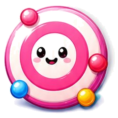
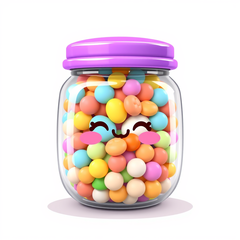
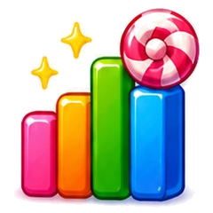
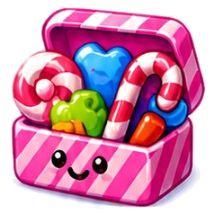
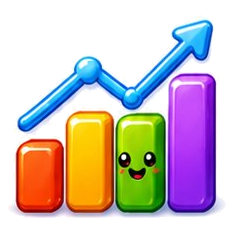
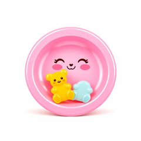
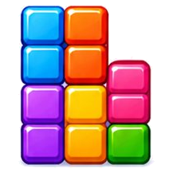
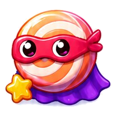
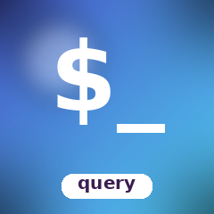
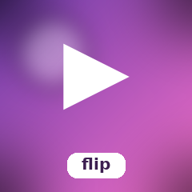
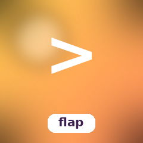
Built for the things Symfony Console can't do.
Persistent render loops, mouse + keyboard, alt-screen, async work without blocking the UI, multi-tenant SSH-served TUIs, charts and sparklines, animated spinners, multi-page forms, Markdown rendered straight to ANSI. The boring parts of CLI tooling — argv parsing, exit codes — pair perfectly with whatever Console framework you already use.